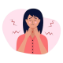

اصل اول : اطمینان بخشی به بیمار در مورد خوش خیم بودن
اصل دوم : شرح حال گیری و معاینه دقیق و رد علائم خطر :
- درد
- دیسفاژی و اودینوفاژی
- کاهش وزن
- تغییر صدا
- توده یا ادنوپاتی گردنی
اصل سوم : انجام تست های تشخیصی
درمان
ابتدا درمان کانزرواتیو با PPI :
Rx
1. Cap Omeprazol 20 mg BD for 6-8 w
در صورت پایدار ماندن علائم یا همراه بودن با علائم سایکیاتری :
Rx
1. Tab Pantoprazol 40 mg daily for 4w
2.Tab Amitriptyline 25mg daily for 4w
نکته : در صورت پایدار ماندن علائم علی رغم درمان کانزرواتیو یا داشتن علائم خطر ، جهت بررسی بیشتر ارجاع داده شود
GERD 1️⃣
2️⃣ هرنی هیاتال
3️⃣ آشالازی
4️⃣ Hypertensive Upper esophageal sphincter
5️⃣ گواتر
6️⃣ کارسینوم قاعده زبان
7️⃣ توده های پارا ازوفاژیال
8️⃣ بزرگ شدن لنف نود گردنی
9️⃣ هایپرپلازی لوزه
تصویری برای این نسخه موجود نیست.